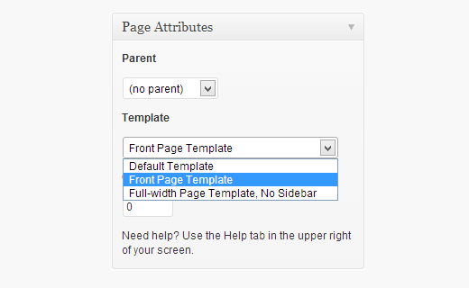

|
This is blog page
Using Default Static and Blog Page Settings in WordPress
WordPress comes with built-in support for creating a custom home page (static front page), and a separate page
for blog posts. To use this method, you need to create two new WordPress pages. The first page is going to be
your custom home page. In your WordPress admin, go to Pages » Add New to create a new page. You can title this
page Home. On the right hand side, you will see Page Attributes box with an option to choose a template.

Most modern WordPress themes come with custom page templates that can be used for the static front page of your
website. In this example we are using the Twenty Twelve theme which comes with a front page template. After cho
osing the template, the next thing you need to do is to click on screen options at the top right corner of the screen and check the discussion box.
|